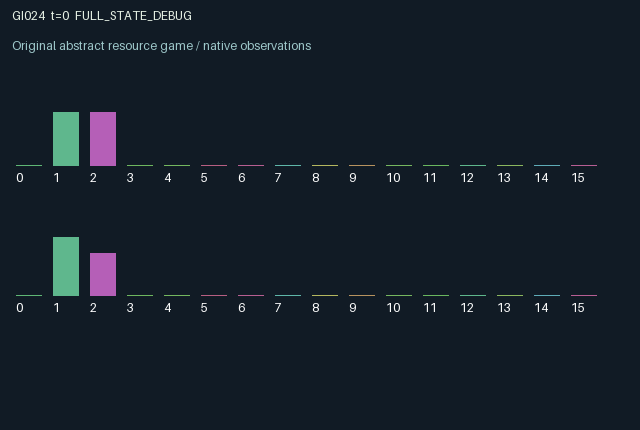

GI024 / LEGACY_ARRAY
Candidate astra-d2-00024: Perishable escrow with expiring consent
2 agents5 actions16 observation columns32 original horizonRuntime: PASS
Release verification episode
Untrained uniform legal actions. Actual JAX state sampled along the full original episode; full-state debug camera. No human performance or learning claim.

Run this game
crucibles play --game 24
Start Python locally, then open the address printed by the terminal. Installation, multiplayer, takeover and keyboard controls →
Objective, rewards & ending
Exact task contract
{
"objective": "Accumulate original per-agent rewards under the interaction rules in mechanism.md.",
"natural_termination": "No early terminal; original t >= 32 horizon.",
"exact_transition_and_reward_source": "def raw_step(self, key, state, actions):\n produce = actions == 0\n pledge = actions == 1\n authorize = actions == 2\n sell = actions == 3\n inspect = actions == 4\n deposited = jnp.where(\n pledge,\n jnp.minimum(\n jnp.minimum(state[\"inventory\"], 0.5),\n jnp.maximum(1.0 - state[\"escrow\"], 0.0),\n ),\n 0.0,\n )\n private_sale = jnp.where(\n sell, 0.10 * state[\"inventory\"] + 0.025 * state[\"escrow\"], 0.0\n )\n inventory = jnp.clip(\n jnp.where(sell, 0.0, state[\"inventory\"] - deposited)\n + 0.35 * produce.astype(jnp.float32),\n 0.0,\n 1.0,\n )\n pre_spoil = jnp.where(sell, 0.0, state[\"escrow\"] + deposited)\n escrow = 0.985 * pre_spoil\n age = jnp.where(\n pre_spoil > 0.0,\n jnp.where(state[\"escrow\"] > 0.0, state[\"age\"] + 1.0, 0.0),\n 0.0,\n )\n consent = jnp.where(\n authorize, 3, jnp.maximum(state[\"consent\"] - 1, 0)\n ).astype(jnp.int32)\n consent = jnp.where(sell, 0, consent).astype(jnp.int32)\n launch = (\n (state[\"timer\"] == 0)\n & jnp.all(escrow >= 0.35)\n & jnp.all(consent > 0)\n )\n completed = state[\"timer\"] == 1\n batch_value = (\n 0.82\n * jnp.minimum(jnp.min(escrow) / 0.5, 1.0)\n * (0.4 + 0.6 * jnp.mean(state[\"grade\"]))\n * jnp.exp(-0.035 * jnp.mean(age))\n )\n timer = jnp.where(\n launch, 3, jnp.maximum(state[\"timer\"] - 1, 0)\n ).astype(jnp.int32)\n shipment_value = jnp.where(\n launch,\n batch_value,\n jnp.where(completed, 0.0, state[\"shipment_value\"]),\n ).astype(jnp.float32)\n costs = (\n 0.025 * produce.astype(jnp.float32)\n + 0.012 * pledge.astype(jnp.float32)\n + 0.008 * authorize.astype(jnp.float32)\n + 0.015 * inspect.astype(jnp.float32)\n )\n rewards = jnp.clip(\n private_sale\n + completed.astype(jnp.float32) * state[\"shipment_value\"]\n - costs,\n -1.0,\n 1.0,\n ).astype(jnp.float32)\n next_state = {\n \"t\": state[\"t\"] + jnp.array(1, dtype=jnp.int32),\n \"inventory\": inventory.astype(jnp.float32),\n \"grade\": state[\"grade\"],\n \"escrow\": jnp.where(launch, 0.0, escrow).astype(jnp.float32),\n \"age\": jnp.where(launch, 0.0, age).astype(jnp.float32),\n \"consent\": jnp.where(launch, 0, consent).astype(jnp.int32),\n \"timer\": timer,\n \"shipment_value\": shipment_value,\n \"inspected\": state[\"inspected\"] | inspect,\n \"last_reward\": rewards,\n \"last_action\": actions.astype(jnp.int32),\n }\n done_all = next_state[\"t\"] >= 32\n dones = jnp.full((2,), done_all, dtype=jnp.bool_)\n info = {\"done_all\": done_all, \"legal_mask\": self.legal_actions(next_state)}\n return self.observe(next_state), next_state, rewards, dones, info"
}Declared per-step reward bounds: -1.0 to 1.0. Observability: source_defined.
Rules
Original mechanism document (historical status wording retained)
# Candidate astra-d2-00024: Perishable escrow with expiring consent Status: original parentless source authored under the supplied v2 contract. No candidate execution, JAX initialization, isolated validation, compiler check, eligibility decision, or learning evaluation was performed by the author. ## Causal mechanism Each role owns inventory and a fixed, privately observed component grade. Both may place inventory in public escrow, give consent that expires after three ticks, sell their own stock or escrow privately, or pay to inspect the other's grade. Escrow loses 1.5 percent of its quantity every transition. Its age tracks the existing cohort while a vault stays nonempty; adding to a nonempty vault does not rejuvenate that cohort. A common shipment starts only when the pipeline is idle, each post-spoilage escrow contains at least 0.35, and both current consent timers are positive. Launch consumes both complete escrows and both consents. Its value depends on the smaller quantity, the mean grade, and exponential age decay. The stored value pays each role three later transitions after launch. Roles can prepare another shipment while the first is in transit. Selling one's escrow revokes that role's consent and can prevent a launch that the counterpart prepared. These state dependencies create a conjunction across two separate inventories, an expiring authorization window, a perishable waiting cost, and a delayed common payout. Both actors can enable or obstruct the other's delivery without directly controlling the other's inventory. ## Actions and information The five actions are 0 produce, 1 pledge, 2 authorize, 3 sell all own inventory and escrow, and 4 inspect the other grade. All actions are legal; ineffective attempts can still incur their stated action cost. Production adds 0.35 inventory up to capacity one; a pledge moves at most 0.5 and respects escrow capacity one. The 16 observation columns are time, own inventory, own grade, own escrow, other escrow, own escrow age, other escrow age, own consent, other consent, shipment timer, shipment value, inspected other grade, inspection-valid flag, own last reward, own last action, and other last action. Ages, timers, actions, and time use the source's displayed normalizations. The counterpart's inventory is hidden. A grade inspection is permanent because grades remain fixed in the episode. A shipment's aggregate value becomes public at launch; that may itself reveal information about the other grade. ## Incentives, delay, and reward bounds Production, pledging, authorization, and inspection cost 0.025, 0.012, 0.008, and 0.015 respectively. Private sale returns 0.10 times inventory plus 0.025 times escrow. A completed shipment pays its stored value equally to both roles. Consent timing, extra escrow that exceeds the bottleneck, and late launches can all waste resources. Shipment value is at most 0.82, and the private sale is at most 0.125. Thus even a sale concurrent with an earlier delivery is below 1 before the explicit final reward clip to [-1,1]. The most expensive single action costs 0.025. These are source-level bounds, not measured rewards. The episode ends on the 32nd transition, preserving that terminal state and observation. Undelivered shipments are neither cashed out nor automatically completed at the horizon. ## Relationship and limits This intentionally relates to generic escrow, complementary production, perishability, and coordination with expiring commitments. It does not claim a new game family, nonisomorphism, or separation from any unseen proposal. No parent source, benchmark source, or outcome was supplied or consulted. The inspection action may be redundant in parts of the state space, and shared delivery incentives need not produce learning gains.
Commands
0Produce
1Pledge inventory
2Authorize consent
3Sell shipment
4Inspect grade
Roles & abilities
agent_0 Original legacy agent; see mechanism and source
agent_1 Original legacy agent; see mechanism and source
Observation permissions
Training receives only the original observation rows. Role cameras use declared visibility; debug cameras are explicitly marked. Local benchmark records log debug exposure and role takeover history.
Exact observation layout
[
{
"slice": [
0,
16
],
"visibility": "exact original observe() below",
"source_code": "def observe(self, state):\n other_escrow = jnp.roll(state[\"escrow\"], 1, axis=0)\n other_age = jnp.roll(state[\"age\"], 1, axis=0)\n other_consent = jnp.roll(state[\"consent\"], 1, axis=0)\n known_grade = jnp.where(\n state[\"inspected\"], jnp.roll(state[\"grade\"], 1, axis=0), 0.0\n )\n obs = jnp.zeros((2, 16), dtype=jnp.float32)\n obs = obs.at[:, 0].set(state[\"t\"] / 32.0)\n obs = obs.at[:, 1].set(state[\"inventory\"])\n obs = obs.at[:, 2].set(state[\"grade\"])\n obs = obs.at[:, 3].set(state[\"escrow\"])\n obs = obs.at[:, 4].set(other_escrow)\n obs = obs.at[:, 5].set(state[\"age\"] / 32.0)\n obs = obs.at[:, 6].set(other_age / 32.0)\n obs = obs.at[:, 7].set(state[\"consent\"] / 3.0)\n obs = obs.at[:, 8].set(other_consent / 3.0)\n obs = obs.at[:, 9].set(state[\"timer\"] / 3.0)\n obs = obs.at[:, 10].set(state[\"shipment_value\"])\n obs = obs.at[:, 11].set(known_grade)\n obs = obs.at[:, 12].set(state[\"inspected\"].astype(jnp.float32))\n obs = obs.at[:, 13].set(state[\"last_reward\"])\n obs = obs.at[:, 14].set(state[\"last_action\"] / 4.0)\n obs = obs.at[:, 15].set(jnp.roll(state[\"last_action\"], 1, axis=0) / 4.0)\n return obs.astype(jnp.float32)"
}
]Entity visibility & attributes
[]
Actual verification & provenance
Per-game execution receipt
{
"game": "gi024",
"status": "PASS",
"verification_revision": 2,
"source_sha256": "e35e035d46066f5257a4ce90302ef0c60216e87d4dd5a4a9e129da91e43141bf",
"seed": 20261101,
"runtime": {
"jax": "0.4.38",
"numpy": "1.26.4",
"devices": [
"TFRT_CPU_0"
]
},
"dimensions": {
"num_agents": 2,
"observation_size": 16,
"num_actions": 5,
"max_steps": 32
},
"checks": {
"eager_reset": {
"status": "PASS",
"seconds": 0.4849357604980469
},
"observation_spaces_legal_masks": {
"status": "PASS",
"seconds": 0.14147257804870605
},
"eager_step": {
"status": "PASS",
"seconds": 0.7933909893035889
},
"jit_reset": {
"status": "PASS",
"seconds": 0.2164311408996582
},
"jit_step": {
"status": "PASS",
"seconds": 0.2267451286315918
},
"eager_jit_integer_parity_float_measurement": {
"status": "PASS",
"seconds": 0.0
},
"jit_vmap_reset": {
"status": "PASS",
"seconds": 0.23640203475952148
},
"jit_vmap_step": {
"status": "PASS",
"seconds": 0.3889350891113281
},
"outer_autoreset_api": {
"status": "PASS",
"seconds": 0.5560617446899414
},
"full_original_horizon_episode_and_render": {
"status": "PASS",
"seconds": 1.071584939956665
}
},
"human_scores": null,
"browser_controls": "PENDING",
"failures": [],
"elapsed_seconds": 4.59529972076416,
"float_parity_max_abs": 0.0,
"numerical_parity": "EXACT",
"raw_terminal_absorbing": "NOT_PART_OF_ORIGINAL_LEGACY_CONTRACT",
"terminal_outer_reset": "PASS",
"episode_steps": 32,
"scripted_random_returns": [
-0.18809729535132647,
-0.2447681799530983
],
"terminal": true,
"demo_information": "FULL_STATE_DEBUG",
"demo_frames": 33,
"render_roles_checked": 2
}Chromium control verification
{
"game": "gi024",
"status": "PASS",
"human_scores": null,
"engineering": true,
"checks": [
"catalog_selected_and_real_native_reset",
"dom_queue_and_native_step",
"second_participant_ownership_and_native_joint_step",
"all_roles_individually_controllable_no_role_cap",
"explicit_debug_camera",
"release_to_pure_ai_without_reset",
"close_session_preserves_log"
],
"ui_sha256": "96243f9de144b80b5e20a114330e2206bdcd58d3efc9c6f13bbc08b95cacc14d",
"keyboard": "NO_LEGAL_CARDINAL_COMMAND_FOR_ROLE0_AT_RESET",
"seconds": 3.624555826187134
}Original identity and file hashes
{
"id": 24,
"key": "gi024",
"title": "Candidate astra-d2-00024: Perishable escrow with expiring consent",
"summary": "",
"tags": [],
"family": "legacy_array",
"dimensions": {
"num_agents": 2,
"observation_size": 16,
"num_actions": 5,
"max_steps": 32
},
"source_sha256": "e35e035d46066f5257a4ce90302ef0c60216e87d4dd5a4a9e129da91e43141bf",
"manifest_sha256": "43cf73a0ec501eb5218ce36617b4160025bbc17de09ddc27b4cf7e28a770e876",
"files": [
{
"file": "candidate.py",
"sha256": "e35e035d46066f5257a4ce90302ef0c60216e87d4dd5a4a9e129da91e43141bf",
"bytes": 5554,
"origin": "work/exp_2/astra_generation/discovery_v2/initial/candidate_00024/attempt_00/candidate.py"
},
{
"file": "mechanism.md",
"sha256": "0d9fb6f3e62a8f988abc21690ff7de3cf1d76f1bb7d7180b48f93bdfc4e3146f",
"bytes": 3803,
"origin": "work/exp_2/astra_generation/discovery_v2/initial/candidate_00024/attempt_00/mechanism.md"
}
],
"original_status": "LEGACY_SOURCE",
"original_saved_replay": false,
"release_validation": "PASS",
"human_scores": null,
"browser_validation": "PASS"
}